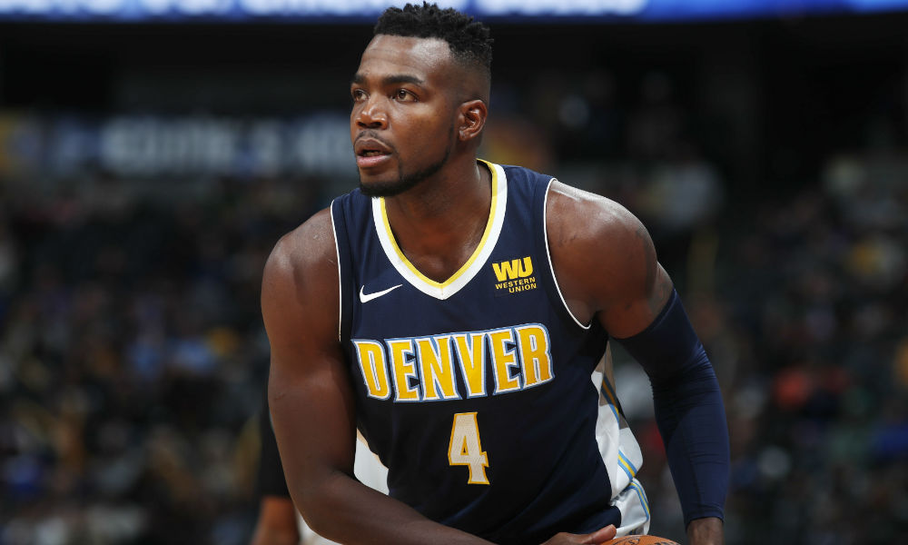
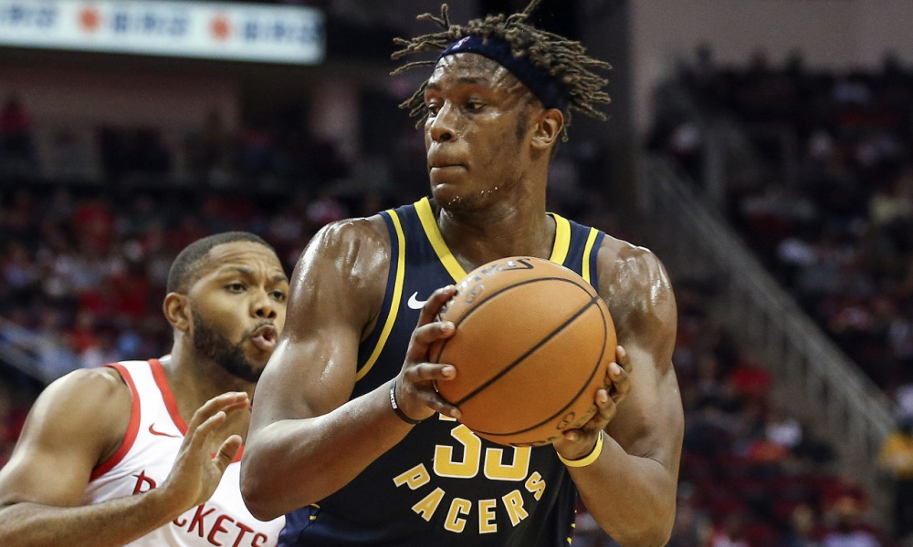
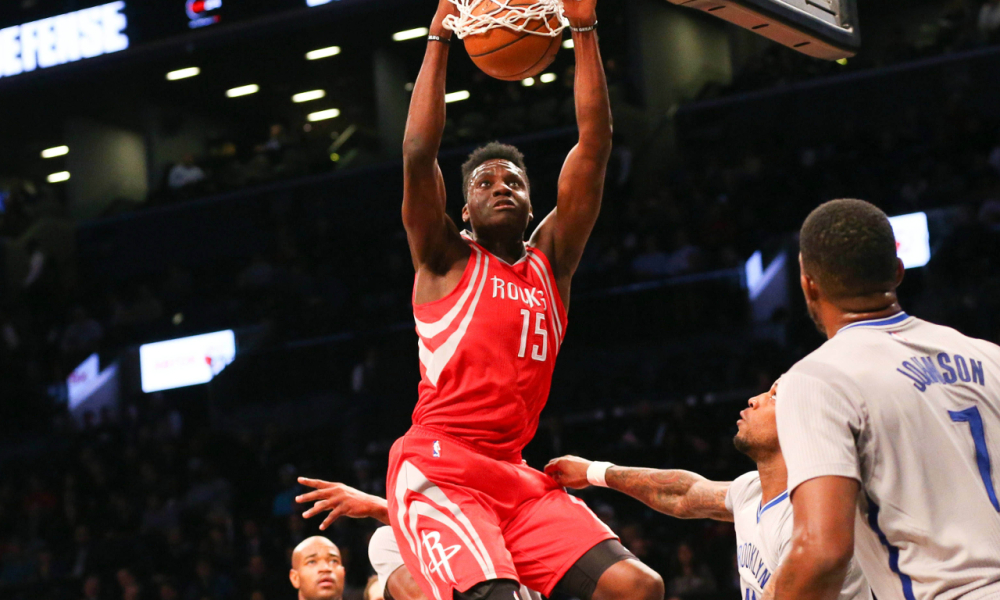

Game 1: Los Angeles Clippers at Brooklyn Nets
My Pick:
Los Angeles Clippers
Why I'm Rolling with them:
The Clippers, 14 games into their season, are 5th in the West. The Nets, 16 games in, are 9th in the East. This is a very large discrepancy, made all the more large by the fact LeVert is still out for this Brooklyn squad. They may have beaten the Wizards yesterday, but this Clippers team is far superior to this version of the Wizards. They play better as a team, have a far better bench, and will capitalize on any weaknesses. Clippers, 119-106.
Game 2: Denver Nuggets at New Orleans Pelicans
My Pick:
Denver Nuggets
Why I'm Rolling with them:
The Denver Nuggets and the Pelicans have both struggled as of late, but I have more faith in Denver's ability to turn it around. New Orleans beat the Knicks by a measly 4 points last night, and I think this Denver team can abuse a tired Pelicans roster to steal a win. Jokic is a good matchup against Davis, as Davis is a better interior defender compared to perimeter defender. This game will be close but Denver takes it 115-113.
 Millsap is the perfect defensive forward for JokicGame 3: Los Angeles Lakers at Orlando Magic
My Pick:
Los Angeles Lakers
Why I'm Rolling with them:
The Lakers are the far superior team, especially now that they've solved their issue of a back up center. I see no reason why the Magic will be able to stop Lebron or Lonzo in their pass-first roles, especially with Lebron's unparallelled ability to get to the rim and score. The Magic won against the 76ers on the strength of Vucevic, but I don't think that will be enough to derail the Lakers in a 120-103 win.
Game 4: Philadelphia 76ers at Charlotte Hornets
My Pick:
Philadelphia 76ers
Why I'm Rolling with them:
The Charlotte Hornets are a good team, but this Philadelphia squad is elite in almost all aspects. Their defense is top calibre, with a defensive player of the year candidate in Embiid, and 2 more all-defense level players in Simmons and Butler. That should be enough to limit this Charlotte team to under 110 points and secure a win, 113-104.
Game 5: Atlanta Hawks at Indiana Pacers
My Pick:
Indiana Pacers
Why I'm Rolling with them:
The Hawks weaknesses have started to show and Trae Young is stagnating, averaging less points on far worse efficiency now that teams know he's their only real offensive threat. Oladipo guarding him should make his life a living hell, and no one on the Atlanta Roster can guard Oladipo. I expect this game to be a slaughter, with the Hawks getting pummelled by a far better team. The Pacers did play yesterday, that won't be enough to stop them from winning 119-103.
 Turner has not improved since his rookie season, that needs to change.Game 6: Utah Jazz at Boston Celtics
My Pick:
Boston Celtics
Why I'm Rolling with them:
The Utah Jazz have not been looking very good lately, and while both these teams are playing back to backs, the Celtics are at home for both games, and are the better team. The center matchup between these two teams is a good example of how the league is moving, with interior centers like Gobert needing to be elite to have a place next to more mobile centers like Horford. Horford takes this one in my eyes, and the Celtics take the Jazz, 109-100.
Game 7: Toronto Raptors at Chicago Bulls
My Pick:
Toronto Raptors
Why I'm Rolling with them:
Both OG Anunuoby and Kahwi Leonard are out. This does not bode well for a Raptors team that badly needs to get a win. Luckily, both these teams played last night, and the Raptors match up well against this Bulls team. Mainly because all of their players are better than the Bulls players on the other team. The Raptor's main issue is that they've been playing lower than their level lately. If they play well, I can see this being a slaughter. As is, Raptors 117-112.
Game 8: Sacramento Kings at Houston Rockets
My Pick:
Houston Rockets
Why I'm Rolling with them:
The Rockets seem to have figured it out, beating a good Golden State team pretty handily. On the other side of the equation, the Kings played last night and are sure to be tired, especially at the high pace they play at. I wouldn't be surprised to see Houston force the Kings closer to their pace, and use that slower pace to disrupt the Sacramento offence to win this game pretty easily, 115-105.
 Capela is the perfect rim runner for Paul and HardenGame 9: Golden State Warriors at Dallas Mavericks
My Pick:
Golden State Warriors
Why I'm Rolling with them:
The Mavericks have benefitted from the their destruction of the Jazz, and have increased their defensive ranking by a ton. However, that doesn't mean that they're on the same level of Golden State, even without Steph Curry. The Warriors can still outclass the majority of teams in the league, and their dysfunction isn't enough for this Mavs team to pull ahead. Warriors win this one 122-109.
Game 10: Oklahoma City Thunder at Phoenix Suns
My Pick:
Oklahoma City Thunder
Why I'm Rolling with them:
TJ Warren has been playing great since moving into the starting role for the Suns, but the Thunder's defense is made to stop a player like Warren. Although his three-point shooting has greatly increased, he's still a lot more comfortable within the three point line. But having George and Ferguson to guard Booker and Warren should be able to hold off the Sun's offense enough for OKC to pull ahead and take it 110-103.